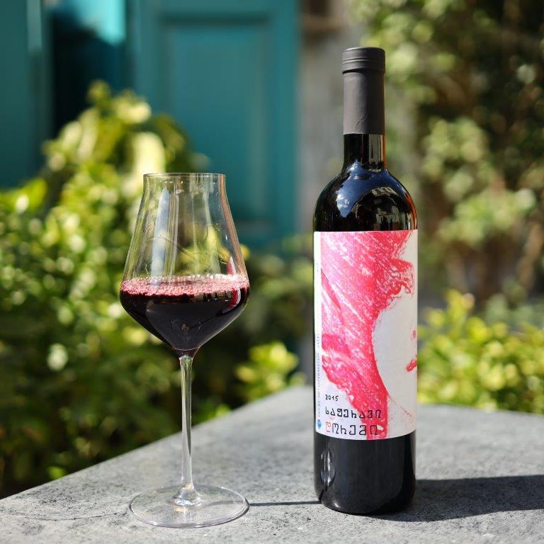
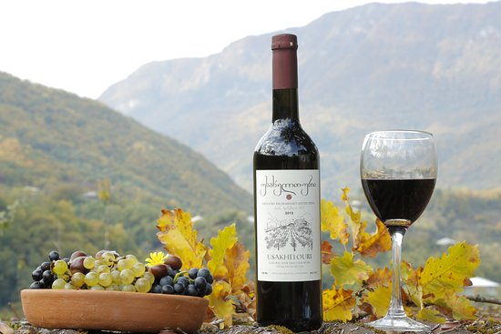

This rich, ruby-coloured wine has blackberry, black mulberry and cherry flavours. Velvety tannins from the most delicate oak barrels provide the wine with a subtle structure.
This dry, unfiltered amber wine made in qvevri has a dark straw colour and light aromas. The whole process of winemaking – maceration, aging and fermentation – is done in the clay jars without any additions, filtration, or sulfites.
Usakhelauri one of the rarest grape types of Georgia – making it one of the most expensive ones as well. The vineyards of Usakhelauri grapes are characterised by a low harvest volume, and the cultivation is very difficult as well. This particular Usakhelauri grape is harvested from the best terrain and is ruby in colour, with aromas of red and white cherries. Therefore, the wine is a dessert wine and goes well with fruits and fruitcakes.
Tvishi is the only Georgian, semi-sweet white wine named after the place of its origin. It is made from Tsolikouri grapes cultivated in Tvishi microzone. The wine is characterized by a hay color, with primary aromas of tropical fruit and flowers.